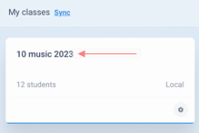
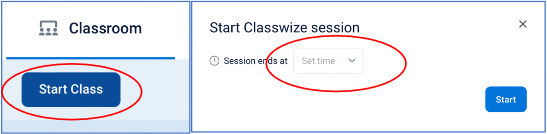
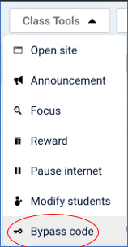

Classwize allows teachers to create class-specific filtering rules that either block or allow access to websites when their classes are in session.
This means that while your school has created filtering policies within School Manager, teachers can still override policies in Classwize to help manage their classes and to support their students’ learning needs. For example, they can temporarily unblock access to sites like gaming or social networking to reward students for good behavior or completing tasks, or block access to an unfiltered site to encourage students to focus in class.
Start your class by clicking on the class name, not the settings cog.

Click on Start Class and select the time for the class to end. Please keep this in-line with the end of your session so altered filtering doesn’t affect other classes.

Once the class is running you can generate a Bypass code. Please only use these for very specific circumstances where you can’t give access through setting Rules for the class.
To start a Bypass Code, select that item in the Class Tools menu on the right of the screen.

Set an appropriate duration for the Bypass Ticket to last, note the code to share with students and then hit START.